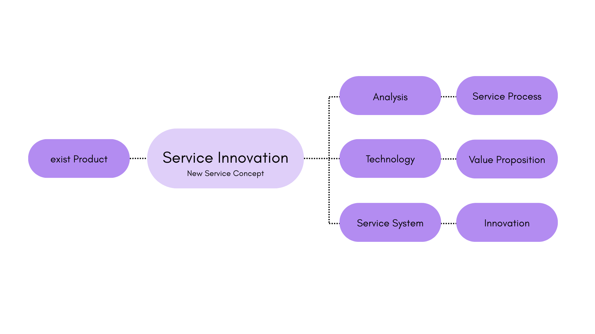

Innovation is not a feature — it is a system.
Servizions transforms existing and competitive medical technologies into structured innovation systems — generating scalable value propositions, adoption architectures, and service-driven market differentiation.

From competitive products to differentiated service-based propositions.
Clear clinical, operational, and economic integration pathways.
Market positioning beyond technical specifications.
Frameworks that grow with hospitals, providers, and ecosystems.
Turning products into long-term strategic platforms.
Building systems competitors cannot easily replicate.